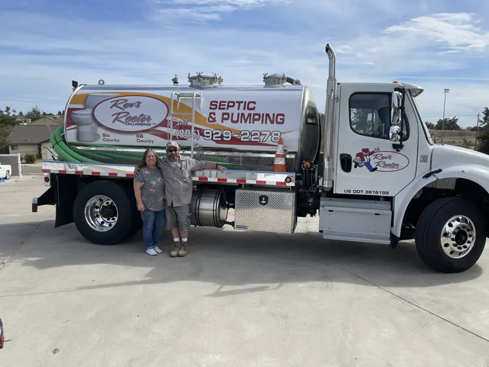

Emergency Plumbing, 24/7
Burst pipe? Overflowing toilet? No hot water? Our 24-hour emergency plumbers respond quickly anywhere in Paso Robles, Atascadero, Arroyo Grande or Nipomo.
Call now →
Trusted San Luis Obispo County plumbers since 2000. Honest pricing, on-time service, and work done right the first time.
(805) 929-2278Serving Paso Robles, Atascadero, Nipomo, Arroyo Grande, Templeton and all of San Luis Obispo County.
Tap your issue and we'll open a text message to Rex's Rooter with it already filled in. Just add your address and hit send.
Water spraying or sewage backing up? Don't wait for a text reply. Call (805) 929-2278.
From a slow drain to a burst pipe at 2 a.m., our licensed plumbers handle it all, for homes and businesses across the Central Coast.
Burst pipe? Overflowing toilet? No hot water? Our 24-hour emergency plumbers respond quickly anywhere in Paso Robles, Atascadero, Arroyo Grande or Nipomo.
Call now →Clogged drains or backed-up sewer lines? We use hydro jetting and camera inspection to clean and clear your system efficiently.
Learn more →Hidden leaks cause major damage. We specialize in slab leak detection, pipe replacement and repiping.
Learn more →Tankless installation or traditional water heater repair. We service all major brands and help improve energy efficiency.
Learn more →Faucets, sinks, toilets, showers and garbage disposals, installed and replaced for reliable performance and a clean finish.
Learn more →Trusted by property managers, restaurants and offices for maintenance, repairs and new installs with minimal disruption.
Learn more →
Great service begins and ends with experienced, friendly professionals. We hand-select every member of our team, so the plumber at your door is someone you can trust.
“We have complete confidence in every person providing our services, because we hire only the best.”


Based in Nipomo and serving all of San Luis Obispo County, including:
[Customer review #1 goes here. Copy it word for word from Google or Yelp, with the customer's permission.]
[Customer name], [City][Customer review #2 goes here.]
[Customer name], [City][Customer review #3 goes here.]
[Customer name], [City]Yes. Our emergency plumbers are available 24/7 for burst pipes, overflowing toilets, sewer backups and no-hot-water calls. Call (805) 929-2278 any time.
Shut off the main water valve (usually where the water line enters the house, or at the meter near the street). Turn off the water heater if the leak is near it, move valuables out of the way, then call us.
Repeat clogs usually mean buildup deeper in the line, like grease, roots or scale, that a plunger or store-bought cleaner can't reach. A camera inspection shows the real cause, and hydro jetting scours the pipe clean instead of just poking a hole through the clog.
Hydro jetting sends high-pressure water through your drain or sewer line to flush out grease, sludge, debris and roots. It cleans the full width of the pipe, so it's a longer-lasting fix than snaking alone.
Common signs are a water bill that jumps for no reason, warm spots on the floor, the sound of running water when everything is off, damp carpet, or cracks in flooring. If you notice any of these, call us for leak detection before it causes more damage.
It depends on the age of the unit and the problem. Many issues, like a bad thermostat, element or valve, can be repaired. If the tank itself is leaking or the unit is near the end of its life, replacement (including a tankless upgrade) often makes more sense. We service all major brands.
Yes. Call or text us to request a free estimate.
Yes. Property managers, restaurants and offices across the Central Coast trust us for maintenance, repairs and new installations, scheduled to keep disruption to a minimum.
Fast, friendly, professional service anywhere in San Luis Obispo County.